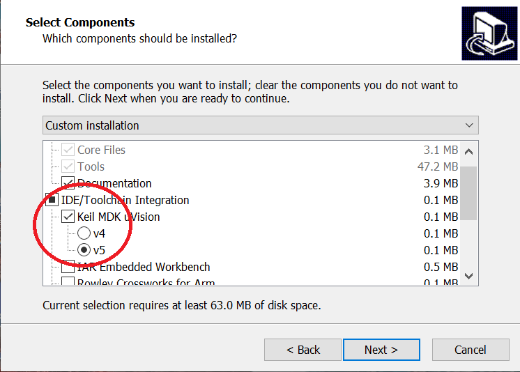

桃芯 SDK 包含核心工具、平台代码包、程序示例及文档。
1. 准备开发环境
SDK 不包含开发环境和编译器，用户需要事先准备好所有的开发环境。桃芯SDK支持 Keil MDK、IAR 等IDE，也支持 GNU Arm Embedded 工具链。
2. 下载 SDK 安装包
根据所使用的操作系统，下载 相应的 SDK 版本。
3. 安装 SDK
在安装向导的组件选择页面，提供了 IDE/Toolchain 集成选项，勾选某 IDE/Toolchain 表示对该 IDE/Toolchain 做适当配置，而非表示自动安装该 IDE/Toolchain。因此，只需要勾选已安装的开发环境和工具链，不要勾选没有安装的开发环境和工具链。

4. 阅读文档、示例
安装完毕后，打开 ingWizard，可以查看 SDK 用户手册、示例程序。
开发板的使用方法请参阅ING91881B 开发板使用手册、ING91880 开发板使用手册。
5. 编译、烧写示例程序
以 LED 示例程序 Peripheral LED 为例， 在 ingWizard 里点击该程序即可在 Keil 里打开，编译后回到 ingWizard 下载程序。 （详情可参考 SDK 用户手册中的教程部分）
开发板烧写了 Peripheral LED 程序后，通过手机 App 可以实时控制开发板上的三色 LED。
6. 用 APP 连接
扫码下载 iOS、Android 演示 App（ING BLE）。打开 App，点按扫描按钮，扫描到名为“ING LED”的设备后， 点按设备名以连接到设备，然后在 App 里控制 LED 的 R/G/B 三色分量。
Note: iOS/Android 应用需要授予定位权限才能使用蓝牙设备。
7. 温馨提示
-
推荐使用 Keil µVision 开发环境。
注意: 需要安装 Keil MDK 版本，而非 51 版本。 -
SDK目前优先支持Windows、Linux，MacOS更新较慢。
-
开发版支持使用USB供电，不需要外接电源。
-
开发板内置J-Link，即插即用。